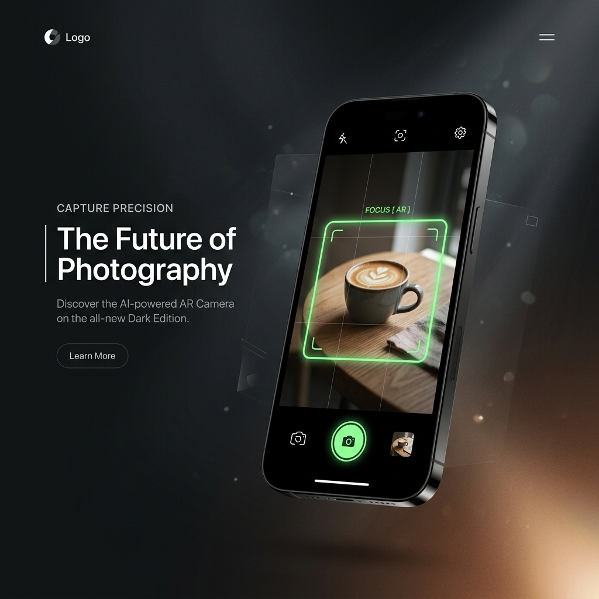

Chụp ảnh đẹp thuần khiết.
Không cần hậu kỳ.
Ứng dụng camera tối giản giúp bạn bắt trọn mọi khoảnh khắc với góc chụp hoàn hảo từ trợ lý AI và bộ lọc màu phim chân thực được xử lý trực tiếp trên GPU.

Nâng Tầm Nhiếp Ảnh Bằng Công Nghệ AI
Doka mang đến trải nghiệm nhiếp ảnh chuyên nghiệp ngay trên điện thoại của bạn mà không cần kỹ năng căn góc hay chỉnh sửa phức tạp.
Căn Bố Cục AR Real-time
AI phát hiện chủ thể và đo đạc bố cục, tự động xác định điểm ngắm tối ưu (Scenic Point) và hướng dẫn đưa chủ thể vào tỷ lệ vàng. Đồng thời gợi ý khung cắt cúp (Auto-Crop) lý tưởng.
Bộ Lọc Màu Phim 3D LUT
Tái tạo màu sắc hoài cổ của các dòng phim cuộn kinh điển qua các preset độc bản như Sài Gòn 89, Đà Lạt, Chợ Đêm, Noir. Sử dụng GPU Fragment Shader để áp màu mịn màng, giữ độ sắc nét của cảm biến.
Gợi Ý Bộ Lọc Bằng AI
Bấm nút ✨ để AI nhận diện cảnh vật (đồ ăn, chân dung, phong cảnh) và đo độ sáng môi trường, đề xuất bộ lọc phim thích hợp nhất thông qua Google Gemini 2.5 Flash.
Làm Đẹp Da GPU Tự Nhiên
Thuật toán làm mịn da bilateral bảo toàn cấu trúc da tự nhiên. Xử lý thời gian thực thông qua bộ lọc mặt nạ tông da YCbCr trên GPU, không làm bết hay ảo hóa gương mặt.
Xem Sự Khác Biệt Chỉ Trong 1 Giây
Kéo thanh trượt qua lại để so sánh ảnh gốc của điện thoại (trái) và tác phẩm nghệ thuật sau khi áp bộ lọc màu phim Doka (phải).
Chọn Gói Trải Nghiệm Dành Cho Bạn
Doka cung cấp gói chụp ảnh cơ bản miễn phí hoàn toàn và các tùy chọn Pro cao cấp dành cho những ai đam mê sáng tạo nghệ thuật.
Gói Miễn Phí
Hoàn hảo cho người mới làm quen với nhiếp ảnh tối giản.
- 5 lượt gợi ý bố cục AI hàng ngày
- 4 bộ lọc phim LUT cổ điển
- Làm đẹp da GPU (Cơ bản)
- Không chèn quảng cáo gây phiền
- Toàn bộ bộ lọc màu phim Pro
- Canh bố cục AI không giới hạn
Doka Pro
Dành cho nhiếp ảnh gia đam mê chất ảnh phim và sáng tạo góc chụp độc đáo.
- Không giới hạn lượt căn bố cục AI
- Mở khóa 20+ bộ lọc phim cao cấp
- Làm đẹp da GPU nâng cao
- Hỗ trợ phân tích ảnh bằng Gemini 2.5
- Quyền sử dụng các filter mới trước
- Không quảng cáo & Không cần internet
Câu Hỏi Thường Gặp
Giải đáp các thắc mắc của bạn về cách hoạt động và quyền riêng tư của Doka Cam.
Không. Doka Cam hoạt động dựa trên triết lý bảo vệ quyền riêng tư tuyệt đối. Toàn bộ thuật toán căn bố cục AR, nhận diện chủ thể và làm mịn da đều được xử lý on-device (trực tiếp trên thiết bị của bạn) thông qua ML Kit và GPU Shader. Hình ảnh của bạn chỉ được lưu trong thư viện cục bộ của máy.
Khi bạn nhấn vào biểu tượng ✨, Doka sẽ chụp nhanh một khung hình xem trước, sử dụng mô hình ML Kit cục bộ để phân loại bối cảnh (như đồ ăn, phong cảnh, chân dung) kết hợp đo cường độ ánh sáng. Nếu máy có kết nối internet và API Key được thiết lập, Doka có thể gửi ảnh lên Google Gemini 2.5 Flash để nhận được gợi ý tinh tế và chi tiết hơn.
Chúng tôi muốn mang lại trải nghiệm nhiếp ảnh thuần khiết nhất. Không bảng tin, không nút thích, không thông báo đẩy gây phiền nhiễu. Doka Cam chỉ tập trung duy nhất vào một việc: giúp bạn lưu giữ khoảnh khắc một cách đẹp đẽ và nhanh chóng nhất có thể.
Ứng dụng được phát triển bằng Flutter và hỗ trợ hoàn hảo trên cả hai nền tảng Android (phiên bản Android 8.0 trở lên) và iOS (phiên bản iOS 13.0 trở lên).